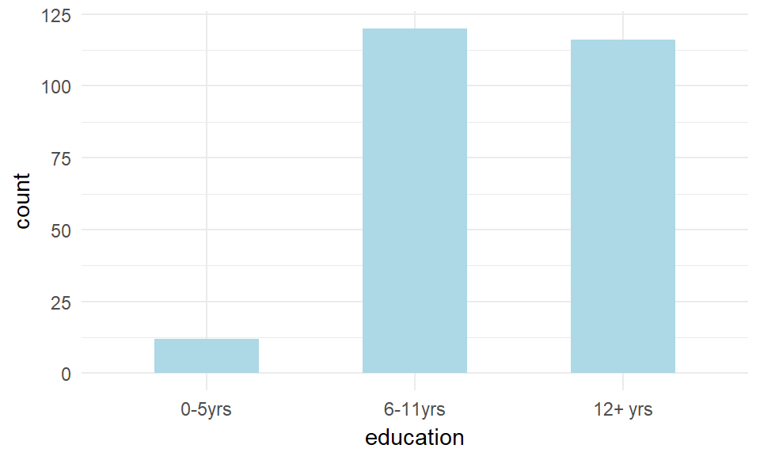
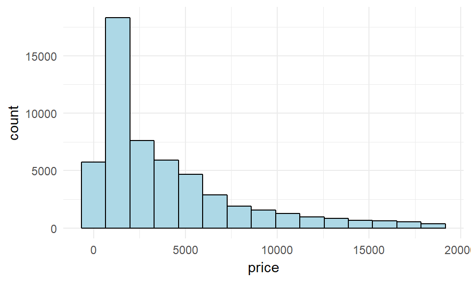
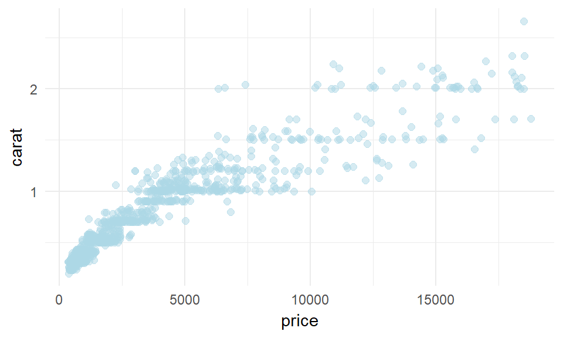
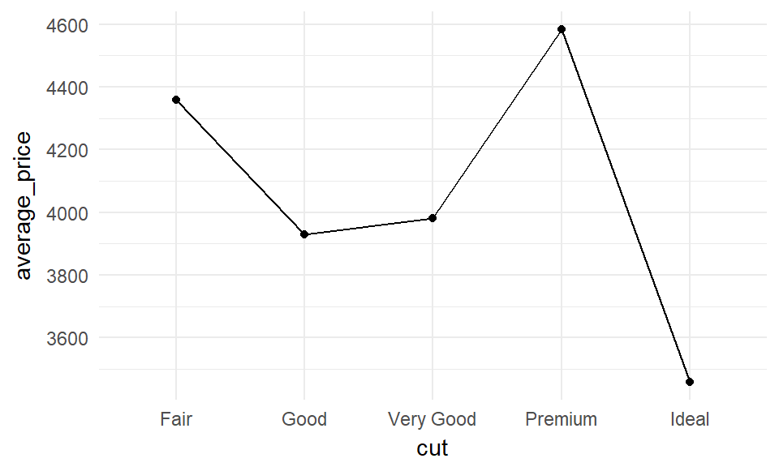
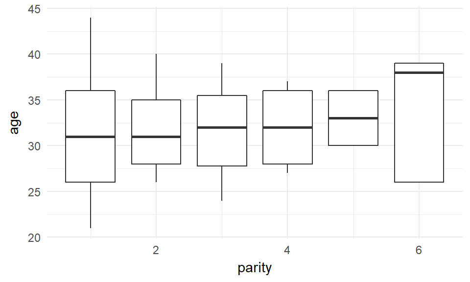

July 16, 2017
Introduction
Definition
Transforms data into meaningful results for decision-making
The whole essence of research is to contribute to the body of knowledge and inform decision-making.
Research Workflow

Fig. 1: Research workflow chart
- Usually, the researcher might go back and forth between each of the stages of the research.
Data Analysis Workflow

Fig. 2: data analysis workflow chart
Data analysis revolves around the trio of transformation, visualization and modeling
The trio forms the core of any statistical software
Importing, tidying and communication strength of each statistical software varies.
Data
Data Format
Usually in the form of a table created using a spreadsheet application (e.g. Microsoft Excel, Notepad, Epi-Info questionnaire, Microsoft Access or even SPSS datasheet)
Made up of rows and columns
Rows are horizontal, columns are vertical
Data Example
Fig. 3: Example of a tabular data
Tidy Data1
Data entered may be tidy or untidy
a tidy data is one where:
each row represents a case (usually all the measurements made on an individual sample or person)
each column represents a unqiue type of variable (i.e. a specific type of measurement)
each cell represents a single observation
Tidy Data2
Example ONE

- The image on the left is not tidy because the "rate" column actually contained two variables: "cases" and "population".
Tidy Data3
a tidy data can be presented in two different formats:
long format: compacted with higher number of rows and smaller number of columns
wide format: more spread-out with reduced number of rows compared to the long format but usually with more number of columns.
There are reasons why you may want to display your data in the wide or the long format as we will see later
Tidy Data4
(Example TWO)
- The two tables above displays the same data but while the left displays the long format (12 rows and 4 columns), the right displays it in the wide format (6 rows and 4 columns)
Variables
Variables
In a tidy data, each column represents a variable
Variables can either be categorical or numerical
Variables
Categorical Variables
- are variables that can only take only specific classes of outcomes.
- the unique type of outcomes are called the "Levels" of that variable
- examples are: names, gender, religion, ethnicity, level of education, social status etc
Categorical variables are further divided into two types: nominal and ordinal
- Called nominal variables when there is no ranking or hierarchy among the different classes e.g. sex, religion, ethnicity
- Called ordinal variables when there is a clear ranking or grading of the possible categories e.g. level of education, social status, Likert scales etc.
Numeric variables
- Numbered variables. Can take on a wide range of values
- Can be of either discrete or continuous type.
Discrete Variables
- Also called count variables
- Can only assume whole numbers
- There are finite possible outcomes
- Examples are: number of children, population, number of cases, etc.
Numeric Variables2
continuous variables
- These variables can take on infinite number of outcomes (i.e. they can be represented as fractions or decimals)
- They are measured variables
- Representation depends on the level of accuracy of the measuring instrument e.g.
- weight can be to whole numbers if using analogue scales but can be to 2 decimal places when using digital scales
- age can be to the nearest year; nearest year and month; year, month and week, etc.
Numeric Variables3
continuous variables (cont'd)
Examples include: age, weight, height, blood pressure, blood sugar etc.
Further classified into: interval and ratio scales.
- Interval scale has no absolute zero point and therefore can assume negative values (e.g. temperature)
- Ratio scale has an absolute zero value (e.g. weight, age)
Variables
Note
Categorical variables with few possible outcomes are generally coded during analysis as discrete (numerical) variables e.g. for gender, male can be coded as"1" and female as "2" or vice versa.
Only categorical variables with several possible outcomes are left as categorical during analysis (these are called "strings") e.g. names.
- Discrete variables with many possible outcomes are treated as if they are continuous variables (e.g. population of places).
- The population of a place can be as small as few hundreds and that of another place as many as several thousands.
Continuous variables can also be converted into categorical variables through a process called "binning" or "grouping" e.g. age of individuals can be converted into age-groups, weight can be classified into underweight, normal weight or overweight etc.
Review ONE
Review TWO
Analysis
Include:
data Visualization using tables and graphs
- Common graphs include bar charts, histograms, scatter-plots, line plots, box-plots, pie charts, density plots
and data modeling
- descriptive statistics
- inferential statistics
- regression/predictive analysis
Data Visualization
Tables
For categorical variables. Summarises the number of occurence of each of the levels of the variable.
| country | count |
|---|---|
| Afghanistan | 34 |
| Albania | 34 |
| Algeria | 34 |
| American Samoa | 34 |
Data Visualization2
Bar Graphs
Also for categorical data. Displays similar information to tables in graph form.
Bar Chart Example

Data Visualization3
Histograms
- Used for continuous variables
- Shows distribution of the continuous variable thus helping to identify deviations from normal distribution.
Histogram Example

Data Visualization4
Scatterplots
- Used for visualizing the relationship between 2 continuous variables
- Helps to understand the correlation between the two variables.
Scatterplot Example

Data Visualization5
lineplots
- Used for visualizing trend in data.
- The discrete/categorical variable is plotted on the x-axis and the continuous variable on the y-axis
lineplot Example

Data Visualization6
boxplots
- Used for visualizing summary statistics of continuous variable. It shows the median, the IQR, and outliers
- Can also be used to view the continuous variable based on a specified criteria (a categorical variable). The categorical variable is plotted on the x-axis and the continuous variable on the y-axis
boxplot Example

Data Visualization7
Piecharts
Modeling
Descriptive statistics
Summarises the findings of the analysis
Not generalizable to the total population
Sample parameters are generally represented using English alphabets while population parameters are represented using Greek alphabets
Descriptive statistics of interest include:
- Measures of central tendencies: mean, median and mode
- Measures of dispersion: standard deviation, variance, minimum and maximum, range, IQR and standard error
Modeling2
Descriptive statistics (cont'd)
| parameter | sample | population |
|---|---|---|
| mean | \(\bar x\) | \(\mu\) |
| proportion (prevalence) | \(p\) | \(\pi\) |
| std dev | \(s\) | \(\sigma\) |
| variance | \(s^2\) | \({\sigma}^2\) |
Modeling3
Inferential statistics
Make deductions from the data and are therefore generalizable (i.e. hypothesis testing)
Includes the Parametric tests and the non-parametric tests
Parametric tests are preferred. However, they make some assumptions about the data
When the assumptions of parametric tests do not hold, use non-parametric tests
Generally, proper sampling and transformations of the data validates the assumptions of parametric tests.
Modeling4
Hypothesis statement
Null Hpothesis (\(H_{0}\)): no statistical significant difference between 2 variables of interest. e.g.
- \(H_{0}\): \(\mu_{1} = \mu_{2}\) (or \(\mu_{1} - \mu_{2} = 0\))
Alternate Hypothesis (\(H_{1}\)): there is a significant difference between the values of two variables. Can be written in three different ways:
- \(H_{1}\): \(\mu_{1} > \mu_{2}\) (first mean is greater than second mean)
- \(H_{1}\): \(\mu_{1} < \mu_{2}\) (first mean is less than second mean)
- \(H_{1}\): \(\mu_{1} \neq \mu_{2}\)
- The first two alternate hypothesis are called "one-sided" hypothesis while the third one is called "two-sided" hypothesis. Two sided because it is testing whether \(\mu_{1} > \mu_{2}\) or \(\mu_{1} < \mu_{2}\)
Modeling5
Inferential statistics (cont'd)
- For inferences, two parameters are important:
- the level of uncertainty (or degree of error or the level of significance) called \(\alpha\) which is usually set at \(0.05\) (i.e. 5%)
- the power of the the test called \(1 - \beta\). This is usually set at \(0.8\) (i.e. 80%)
Modeling6
Inferential statistics (cont'd)
Inferences are generally made using:
- Confidence Intervals (\(CI\)): A plausible range of values for the population parameter. This is usually set at 95% meaning that you are 95% certain that the true population value will be within these range of values calculated using your sample.
- Test statistics (e.g. Z-test, t-test or chi-square values depending on the statistical test carried out)
- P-value: the probability of observing data at least as favorable to the alternative hypothesis as our current data set, if the null hypothesis is true.
- Usually set at a significance level of \(0.05\) meaning any p-value less than \(0.05\) is significant.
- The most commonly used parameter for inferencing.
Modeling for Categorical data
Descriptive statistics
- Measures of central tendencies: proportion/prevalence/percentage of outcome of interest (e.g. proportion of the population with diabetes)
- Measures of dispersion: standard deviation (\(\sigma\)), variance (\({\sigma}^2\)) and standard error
Modeling for Categorical data2
Inferential statistics
Binomial test for one-sample
Binomial test or chi-square (\({\chi}^2\)) for two-sample
Chi-square (\({\chi}^2\)) for 3 or more samples.
Non-parametric tests can also be used when the assumptions of parametric tests are not met e.g. Fisher's Exact test, McNemar's test
Modeling for Continuous data
Descriptive statistics
- Measures of central tendencies: mean (\(\bar x\)), median
- Measures of spread: standard deviation (\(s\)), variance (\(s^2\)), minimum and maximum, range, IQR and standard error.
Modeling for Continuous data2
Inferential statistics
- T-test (more commonly used) for one-sample
- T-test for two-sample (paired or unpaired)
- Analysis of Variance (ANOVA) test for 3 or more samples.
- Non-parametric tests e.g. the Mann-Whitney test when the assumptions of parametric tests are not met.
Correlation and Regression
- Used to determine variable(s) that have significant relationship with an outcome of interests and are therefore important determinants of the outcome.
- The outcome of interest is called the outcome (or independent) variable
- The variables that have relationship with the outcome of interest are called predictor (or dependent) variables.
- Two variables can be positively correlated if the value of one increases as the other increases, negatively correlated if the value of one increases as the other decreases, or not correlated.
Correlation and Regression2
- Regression is also used in building prediction models
- There are basically two classes of Regression methods:
- Linear regression: e.g. Simple Linear Regression, multiple Polynomial regression etc
- Generalized Linear Models: e.g. Logistic Regression, Poisson Regression etc